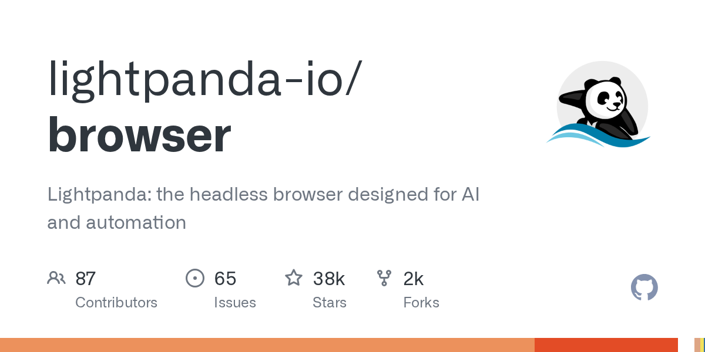

뉴스만 옮기지 않고, 직접 받아서 돌려 본 것과 못 해 본 것을 솔직하게 적습니다. 다뤄 줬으면 하는 오픈소스가 있으면 메일로 알려 주세요.

Lightpanda는 크롬과 별개로 Zig로 처음부터 새로 짠 헤드리스 브라우저로, AI 에이전트와 자동화 수집을 주로 겨냥한다. 크롬보다 가볍고 빠르다고 내세우지만, 나는 설치하지 않고 소스 코드를 받아 읽는 데까지만 직접 확인했다.
로컬에 깔아둔 AI 코딩 도구를 스마트폰·웹·데스크톱 앱에서 원격으로 다루게 해 주는 오픈소스다. 설치 없이 저장소만 받아 코드를 읽었고, 핵심 기능 2가지를 직접 돌려봤다.
강의 자료를 넣으면 질의응답과 퀴즈를 만들어 주는 AI 튜터 "DeepTutor"를 받아, 설치하지 않고 복습 계산 코드만 따로 떼어 돌려 봤다.
트레이딩 회사의 업무 흐름을 AI 에이전트로 옮겨 놓은 오픈소스다. 직접 받아서 코드를 읽고 일부를 돌려 봤다. 이 프로젝트에서 눈여겨볼 부분은 실제 거래보다 "과거 결정을 기록해 두고 나중에 검증하는" 설계였다.
repo-proof는 "이 저장소의 README가 실제로 맞는가"를 기계로 판정하는 도구다. 설치 없이 저장소만 받아서, 인터넷이 끊긴 환경에서 읽을 수 있는 부분만 읽었다. 그러다 판정 로직에서 다중 줄 정규식 결함 하나를 재현했다.
AI가 자료를 보고 쓴 글에서 숫자·이메일·URL이 정말 자료에 나오는지 모델 없이 대조해 주는 Python 도구 numguard를 받아 봤다. 설치하지 않고 로컬에서 코드를 읽고 돌려 본 기록이다.
GitHub 스타가 117,197개인 LLM 다에이전트 주식 트레이딩 프레임워크를 받았다. 의존성은 하나도 설치하지 않은 채, 코드를 읽고 돌릴 수 있는 데까지 실제로 돌려 봤다.
AI 에이전트가 웹에서 직접 데이터를 받아 오게 해 주는 명령줄 도구 Agent-Reach를 내려받았다. 설치도 인터넷 연결도 하지 않은 채 코드를 읽고, 돌릴 수 있는 부분만 실제로 실행해 봤다.
앱·바이너리를 분석(역공학)하게 하는 에이전트 스킬이다. MCP 서버나 207개 도구 없이 8KB짜리 안내 파일 한 장만으로 "어떤 원시 명령을 쓰면 가장 빠른지"를 알려 준다. 설치 없이, 인터넷도 쓰지 않고 직접 받아서 확인해 봤다.
같은 로컬 AI를 5개 인스턴스로 나눠 문제를 풀면 혼자 풀 때보다 정답률이 오른다는 프로젝트 GVS5H를 받아서, 설치 없이 인터넷도 끊은 채로 살펴본 뒤 이 맥에서 직접 돌려 본 기록이다.
LLM 프롬프트 평가·보안 테스트 도구 promptfoo(별 26,383개, MIT)를 받아 봤습니다. 설치는 못 해서 코드를 읽고, 핵심만 다시 만들어 돌려 본 기록입니다.
OpenShell은 자율 AI 에이전트를 격리해서 돌리는 런타임이다. 정책으로 에이전트의 파일·네트워크·시스템 접근을 제어한다. 다만 macOS의 격리는 아직 실험 단계이고, Docker가 없어 직접 돌려보지는 못했다.
회사 ATS(채용 관리 시스템)에서 IT 공고를 직접 긁어오는 오픈소스 채용 검색 도구 freehire를 받아, 인터넷 없이 돌릴 수 있는 부분만 실행해 본 기록이다.
Mac 한 대에 같은 27B 모델을 세 가지 실행 프로그램으로 띄우고 똑같은 질문을 보냈다. 답을 쓰는 속도는 가장 빠른 Splash가 나머지 두 프로그램의 약 2.4배였다.
Mac.apk(v1.0.2303, AGPL-3.0)는 애플 실리콘 맥에서 안드로이드 앱(.apk)을 가상머신 없이 네이티브로 실행하는 오픈소스입니다. GitHub에서 저장소만 받아 코드를 읽었고, 내부에서 일어나는 "ARM32 앱 코드 → ARM64 변환" 과정은 인터…
DeepSeek가 자체 서비스에서 쓰는 추론 엔진 DeepInfer를 오픈소스로 냈다는 소식에, 코드를 받아 Mac에서 실제로 돌려볼 수 있는 범위까지만 살펴봤다. 설치는 하지 않았다.
headroom은 AI 에이전트가 읽는 도구 출력, 로그, RAG 청크, 파일을 LLM에 보내기 전에 로컬에서 압축해 토큰을 줄여 주는 오픈소스다. 저장소를 받아 설치 없이 코드를 읽었고, 시드된 벤치마크 시나리오를 오프라인으로 돌려 압축이 어디까지 잘라낼 수 있는지 …
AI 코딩 에이전트끼리 작업 기록을 나눠 갖게 해 주는 Rust 기반 오픈소스 ai-memory를 받아 봤습니다. 설치도 인터넷도 없는 환경이라 의존성이 없는 shell 훅 레이어만 실험했습니다. 서버 바이너리 실행, MCP, 검색, 기억 통합(consolidation…
Rust로 짠 오픈소스 파라메트릭 3D CAD인 SolidCraft 저장소를 내려받아, 인터넷·설치 없이 살펴보고 돌려볼 수 있는 범위만 실제로 돌려 본 기록이다. GUI·MCP는 못 돌려 봤지만, 코어 수학은 재현 실행으로 확인했다.